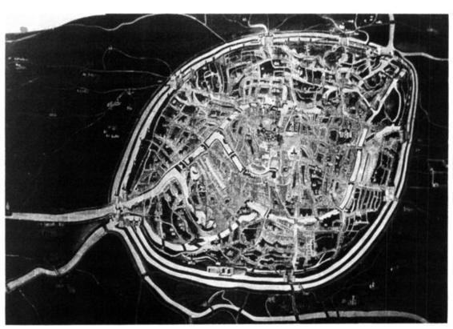

Architectures for extracting value
(aka capitalism)Any organization that designs a system (defined broadly) will produce a design whose structure is a copy of the organization's communication structure.
Normal program architecture

Features
- Data is centralised
- Hierarchy of control
- The UI design is standardized
P2P architecture

Federated
- Mastodon, NextCloud using ActivityPub
- Same problems as email
- Pseudo-centralised
Scuttlebutt / Dat
- Scuttlebutt - social, Dat - files
- Data is decentralised
- No gatekeepers
- UI embodying local values
Machine learning architecture
ML recommendation systems
- Anywhere with large quantities of data
- Youtube, Netflix, Amazon, Google
- But also Facebook
Continued
- More than 70% of view time on YouTube comes from "AI"
- Degenerate feedback loops in recommender systems
- Machine learning is like money laundering for bias
- Not on facebook? No problem. Android apps interact with Facebook
Machine learning questions
- What values does the trained algorithm embody?
- How do we determine this? Is it static?
- Who decides what these values can be?
Machine learning summary
Seeing like a state
Bruges circa 1500
Chicago circa 1893

Digital high modernism
- Computers are a modernists wet dream
- Systems enforcing simple global rules
- Trend since the industrial revolution
China
Mall camera
 Tiny frame-mounted cameras analyze your face, discerning your
age, gender and mood
Tiny frame-mounted cameras analyze your face, discerning your
age, gender and mood
Digital high modernism continued
- Global surveillance
- Chinese social credit system
- NSA - Snowden
- Silicon Valley - Google, Facebook, Twitter etc.
Summary
Thank you!
www.scuttlebutt.nz